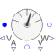

AnalysatorACAnalyze AC voltage, current and power |

|
Diagram
{kind=link}
Information
This information is part of the Modelica Standard Library maintained by the Modelica Association.
Provides mean of total power over one period as well as the following values for each phase:
- RMS of first harmonic of line-to-line voltage
- RMS of first harmonic of line-to-neutral voltage
- RMS of first harmonic of feed current
Parameters (5)
| m |
Value: 3 Type: Integer Description: Number of phases |
|---|---|
| f |
Value: 50 Type: Frequency (Hz) Description: Mains frequency |
| mSystems |
Value: numberOfSymmetricBaseSystems(m) Type: Integer Description: Number of base systems |
| mBasic |
Value: integer(m / mSystems) Type: Integer Description: Phase number of base systems |
| kPolygon |
Value: if m == 2 then 1 else integer((mBasic - 1) / 2) Type: Integer Description: Alternative of largest polygon voltage |
Connectors (7)
| plug_p |
Type: PositivePlug Description: Positive polyphase electrical plug with m pins |
|
|---|---|---|
| plug_n |
Type: NegativePlug Description: Negative polyphase electrical plug with m pins |
|
| plug_nv |
Type: NegativePlug Description: Negative polyphase electrical plug with m pins |
|
| pTotal |
Type: RealOutput Description: Total power, mean |
|
| iFeed |
Type: RealOutput[m] Description: RMS feed currents, first harmonic |
|
| vLL1 |
Type: RealOutput[m] Description: RMS voltages line-to-line, first harmonic |
|
| vLN |
Type: RealOutput[m] Description: RMS voltages line-to-neutral, first harmonic |
Components (7)
| multiSensorAC |
Type: MultiSensor |
|
|---|---|---|
| multiDelta |
Type: MultiDelta |
|
| voltageSensor |
Type: VoltageSensor |
|
| iH1 |
Type: Harmonic[m] |
|
| vH1 |
Type: Harmonic[m] |
|
| powerTotal |
Type: Mean |
|
| voltageLine2Line |
Type: Harmonic[m] Description: Line-to-line voltage |
Used in Examples (1)
|
Modelica.Electrical.Polyphase.Examples Demonstrate a polyphase diode rectifier |